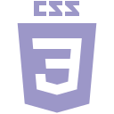
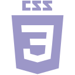

<about/>

about me
hey there!
I'm a multi-skilled front-end developer and writer based in Toronto, Canada.
I'm always refining my skills as a creator and as both a front-end and back-end developer. Below you can see just a small glimpse of the work I've done as a front-end designer, applying my past skills in print design, graphic design, animation, and photography!
What's your story?
Born in 1984 in Niagara Falls, I eventually found myself in Toronto, studying at prestigious schools including University of Toronto, Humber College, and HackerYou.
I have years of experience freelancing as a web developer for small businesses and non-profits, as well as a copy editor and writer, trading largely with local publications.
Okay, but what else?
Having graduated from HackerYou's immersive front-end development program, I have become a highly-skilled and dedicated front-end developer, with a deeply-rooted love for what I do.
I have an indomitable passion for giving back to the LGBTQ community, of which I owe so much, and love working with people and working toward making the world a better place through both charity foundations and advocacy.
Most of all, I am dedicated to growing as a person and becoming better every day, however I can. I have a genuine love of all people and will always go out of my way to provide whatever support I can for those in need.
So if you have anything you'd like to talk about, please contact me!
<skills/>
my skills
born a creator
I consider myself a life-long creator and a veteran in web development (though one who is constantly learning and improving).
My philsophy in design has always been to challenge myself and invent new and ambitious ways of developing content. In web development in particular, I pride myself in avoiding prefabs and third-party libraries whenever possible; if it's something I can learn to do myself, that's what I'm going to do.
born a programmer
My experience as a programmer began at an early age, when I would explore the inner workings of DOS and write small games using chains of batch scripts.
Since then, I have expanded on and improved my skills and abilities on my own as a self-taught coder with experience in languages including HTML, CSS, Javascript, PHP, Python, and C.
born an artist
On the design side of web development, as the son of an art teacher, I had always possessed a certain ability for visual arts and layout. Throughout my life I have constantly worked to improve my aptitude in digital graphics and animation, as well as my instincts in colours and form. With a formal education in print design and layout, I've used my collection of abilities to always come up with new and interesting ways of developing exciting web sites and applications.
 



<work/>

Haiku Generator
The Haiku generator was my first larger-scale web application, and one of my prouder accomplishments.
Programmed entirely in Javascript, this project was a labour of love and my final piece for HackerYou's part-time web development program. The intent was to create a method of producing genuine, randomly-generated haikus faithful to the traditional Japanese style. Every line is chosen from a database of personally-written poetry, along with an accompanying, low-weight looping background animation.
The project took about a week to design and build, with additional time spent to refine and add to the overall product after completion.
Accessibility Features
Responsive Design
Javascript/JSX
Original design
Third-party libraries
<view site/>

Scope Creep
Scope Creep has been my most ambitious project to date, and a piece I'm constantly working on and improving, hoping to one day build it from a simple proof-of-concept to a full-fledged interactive narrative game.
Scope Creep currently exists a proof-of-concept story-telling framework running a work-in-progress story.
Built in Javascript, this served as my entry into developing an API for my purposes, designed with future expandability and reuse in mind. This API permits the developer to produce their own choose-your-adventure styled game with a simple and easy-to-understand interface, though with a powerful choice-based system.
It was a lot of fun to produce, and offered me a chance to try out new ideas for styling effects in CSS, including scanlines, image artifacting, and pixelation. The 'Options' button provides the user with their choice of traditional computer terminals for the styles to emulate, including a plaintext option as an additional accessibility feature.
Accessibility Features
Responsive Design
Javascript/JSX
Original design
Original API framework
Third-party API usage
Third-party libraries
Collaborative work
<view site/>

Movie Night
Movie Night was a collaborative project with the purpose of using a chosen third-party API to render a small and fun application.
Movie Night's premise is simple: Provide the user with a randomly-picked movie recommendation based on a chosen genre, preferred age, and preferred quality (lower-quality movies having the 'I wanna watch something trashy' tagline).
We used theMovieDB.org's API for this purpose, and developed a clean, Kodi-inspired design as its output.
Accessibility Features
Responsive Design
Javascript/JSX
Original design
Third-party API usage
Third-party libraries
Collaborative work
<view site/>

Cronus (PSD)
Cronus is a large, single-page spread mockup, and only the second PSD conversion I had ever attempted.
My goal in this PSD conversation was not only to design a site as faithful as possible to the original, but to add an additional challenge of adding features and elements not necessarily breaking that faithfulness.
Though very minimal repsonsiveness was implemented (as was instructed), I'm proud of the things I learned through this exercise and the new and interesting design tricks I had implemented.
Among such tricks were my attempts to make the contact forms both accessible and dynamic, using CSS rules to provide attractive feedback for the user's position and output. I also made sure to rely on CSS and HTML for adding graphical elements not included in the PSD's assets.
Overall, developing this site, though not of my own original design, was a fun experience and allowed me to test my creativity in ways I hadn't often explored.
Accessibility Features
Responsive Design (partial)
PSD Conversion
Javascript/JSX
Original design
<view PSD/>
<view site/>

Foot-Forward (PSD)
Foot-Forward is another PSD conversion site I found interesting and fulfilling to work on.
The reason is, specifically, because of the limitations imposed in the exercise: Objects must be aligned using only floats, not flex-boxes or grids. Such a restriction allowed me to think outside of my comfort zone and to make careful approaches to my design to ensure that collisions between objects or parental collapses wouldn't happen.
With the additional factor of making the site fully responsive, this conversion was a lot of work to pull off, despite the very simple aesthetic and it not being my own original design.
Ultimately the work I've found most rewarding are those not necessarily the most aesthetically-rich, but that provide the greatest learning experience.